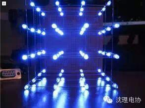
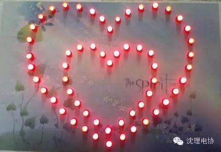

使用小程序
4*4*4光立方DIY套件

5mm LED 64个----颜色看喜好，建议雾状LED，高亮的可能会刺眼。
STC89C52RC单片机 1块。
40p单片机座 1个。
12M晶振 1个。
30-22uf陶瓷片电容 2个。（甚至可以省，但建议加上）
9*375px万用板 1块.
导线若干。
要做成完全自主的工艺品的话，应该还需要电池盒供电和电源开关。
心形灯完全DIY套件

5mm LED 32个----颜色看喜好，建议雾状LED，高亮的可能会刺眼；单色多色都可以，但多色可能复杂一点，因为不同颜色的灯可能需要不同的电阻。
470-1K之间任意阻值的电阻 32个----这之间的都可以，可能会稍微影响亮度，可忽略差距。
STC89C52RC单片机 1块。
40p单片机座 1个。
12M晶振 1个。
30-22uf陶瓷片电容 2个。
9*375px万用板 1块。导线若干。
以上材料已省掉复位电路，因为不是必须的。当然你也可以自己加。
如果想要做成完全自主的工艺品的话，应该还需要电池盒供电和电源开关。至于包装的话，看个人喜好，要送人的话还是要包装的。
另外说一下，大家需要的链接不一定非得用大二学长的。学长们也是在淘宝上搜索的。大家也可以自己在淘宝上搜索一下哦。购买时注意邮费问题啊，在同一家买一件和买十件，邮费是一样的哈。所以尽量一次把以后需要的都买齐吧！最后提醒大家记得和商家沟通哈，一般老板人都会很好的，我不会告诉你们他们的学习资料不错哦。
关注沈理电协（微信：sylgdzxh）
每一次转发和分享都是对我们的肯定。